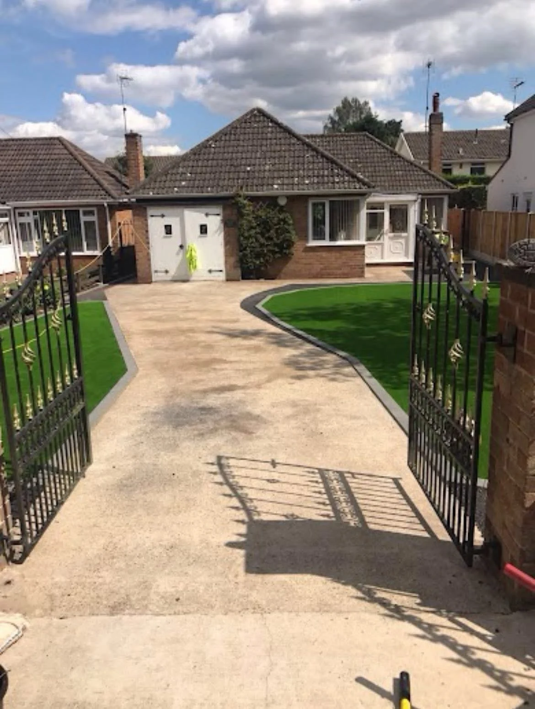

THE WARRIOR APPROACH
Start with your space.
A resin finish creates a continuous surface with room for curves, contrasting edges and clearly defined lawn areas. Browse our supplied resin driveway and courtyard projects.
Send the approximate dimensions, your postcode and a few photographs. We can discuss the materials, preparation and details that suit the work.
Discuss your project →OUR PROJECTS
Resin driveways projects.
Select a photograph for a complete, uncropped view. Related outdoor work is included for context.
REQUEST A QUOTE
Let’s talk about your outdoor space.
Tell us what you have in mind. This form opens a WhatsApp draft with all your details, ready for you to review, add photos and send.